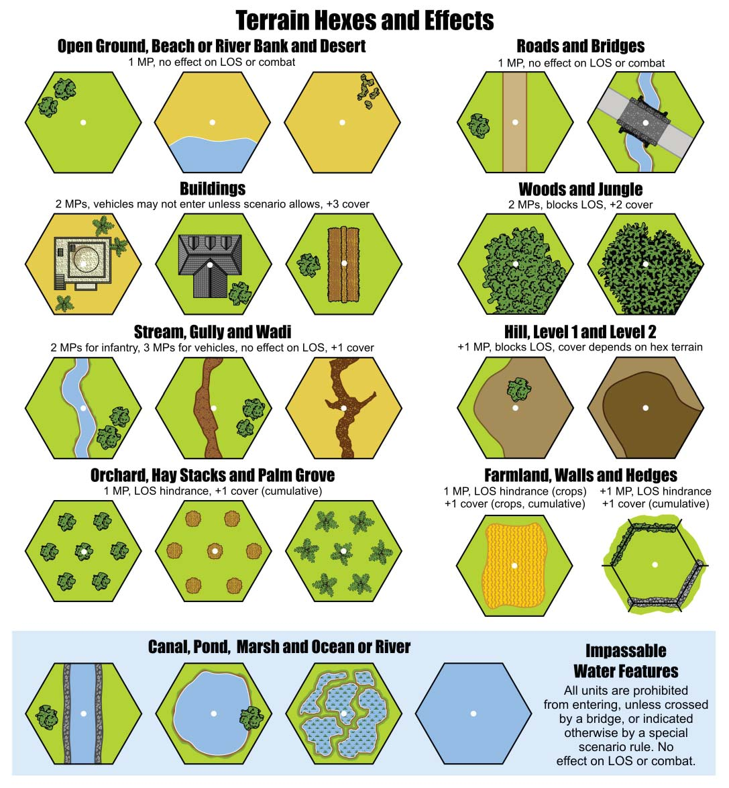

10. Terrain¶
10.1 General¶
A terrain hex is defined by the terrain features in the hex. A hex may contain small, aesthetic features that do not affect or define the terrain type of the hex (i.e. a small tree does not constitute a woods hex). Terrain features affect movement by adjusting the Movement Points a unit must expend to enter the hex, and combat is affected by applying the cover modifier of the target hex to the attacker's dice roll.
10.2 Open Ground¶
A unit must expend one Movement Point to enter an open ground hex. An open ground hex does not block LOS, and has no effect on combat. Beach, river banks and desert hexes are considered open ground if they contain no terrain feature that affects LOS or combat.
10.3 Road¶
A unit must expend one Movement Point to enter a road hex. A road hex does not block LOS, and has no effect on combat.
10.31 Bridge¶
A bridge hex is considered a road hex for movement purposes. A unit must expend one Movement Point to enter a bridge hex. Vehicles and Guns (whether towed or being moved by their crews) may only enter a bridge hex from a connecting road hex. Bridge hexes over streams and canals negate the movement effects of the stream or canal; units may move freely over a stream or canal when crossing through a bridge hex. Units in a bridge hex are considered to be on the bridge, not occupying the terrain under the bridge. Bridge hexes do not block LOS, and provide no cover modifier to units occupying the hex.
10.4 Building¶
A unit must expend two Movement Points to enter a building hex. Vehicles are prohibited from entering a building hex, except when indicated by special scenario rule. Large Guns (i.e. Movement Points of 0) are prohibited from occupying building hexes, except when indicated by special scenario rule. Building hexes block LOS, and provide a +3 cover modifier to units occupying the hex.
10.5 Woods and Jungle¶
A unit must expend two Movement Points to enter a woods or jungle hex. Woods and jungle hexes block LOS, and provide a +2 cover modifier to units occupying the hex.
10.6 Stream, Gully and Wadi¶
An infantry unit must expend two Movement Points to enter a stream, gully or wadi hex. Vehicles must expend three Movement Points. Stream, gully and wadi hexes do not block LOS and provide a +1 cover modifier to units occupying the hex.
10.7 Hill (Level 1 and Level 2)¶
A hill hex represents terrain with a higher elevation than surrounding, "ground level" terrain. A Level 1 hill hex is brown, and a Level 2 hill hex is dark brown. A hill hex may also contain other types of terrain (e.g. woods). A unit that enters a hill hex (i.e. moves from a ground level hex to a Level 1 hill hex, or from a Level 1 hill hex to a Level 2 hill hex) must expend one extra Movement Point, in addition to the normal cost of the terrain in the hex. For instance, if a hill hex is open terrain, a unit entering it from a ground level hex must expend two Movement Points - one for entering an open hex, and one additional Movement Point for moving uphill. A unit moving downhill (i.e. from a Level 1 hill hex to a ground level hex), or along a series of hill hexes at the same level, pays only the normal movement costs for the terrain in the hex. A vehicle or gun may not move from a ground level hex to a Level 2 hill hex, or vice versa. Infantry units must expend their full movement allowance to move from a ground level hex to a Level 2 hill hex, or vice versa, and may not use the Infantry Assault Movement bonus (see 6.4). Hill hexes block LOS except in cases where only one Level 1 hill hex is crossed-the first, "slope" hex-leading either up to a Level 2 hill hex, or down to any ground level hex from a Level 2 hill hex (see the LOS Examples). A unit on a string of adjacent, same level hill hexes (a plateau) has LOS to units on the hill plateau, or on a separate hill of the same elevation, unless there is other intervening terrain between them that blocks LOS.
10.8 Orchards, Hay Stacks and Palm Groves¶
A unit entering an orchard, hay stack, or palm grove hex must expend one Movement Point. Orchard, hay stack, and palm grove hexes do not block LOS, but are a hindrance and modify all attack rolls tracing their LOS into or through the hex by +1.
10.9 Farmland¶
There are two types of farmland: fields and crops. A scenario will state if a farmland hex is a field or crop. If not specified, the hex is a field. A unit entering a farmland hex (field or crop) must expend one Movement Point. Fields are open terrain (i.e. no effect on movement or combat), and crops are farmland in season. Crop hexes do not block LOS, but are a hindrance and modify all attack rolls that trace their LOS into or through the hex by +1.
10.10 Walls and Hedges¶
Walls and hedges are hexside terrain features. A unit crossing a wall or hedge hexside must expend one Movement Point to cross the hexside in addition to the cost of the terrain in the hex it is entering. Walls and hedges do not block LOS, but are a hindrance and modify attack rolls which trace their LOS across or along the hexside by +1, in addition to any other hex cover or hexside LOS modifiers that may apply. Units adjacent to a wall or hedge hexside ignore the hindrance effects when firing across a wall or hedge; they are considered to be firing over the wall or through the hedge. Units firing along a wall or hedge hexside always apply the hindrance modifier, even if the firing unit(s) are adjacent to the hexside in question.
10.101 Hedgerows (Bocage)¶
A special scenario rule may indicate that hedges are hedgerows, or bocage, terrain specific to the countryside of Normandy. Hedgerows block LOS (i.e. units may see into a hedgerow hex, but not beyond), but otherwise affect movement and combat the same as hedges.
10.11 Canal, Pond and Marsh¶
All units are prohibited from entering a canal, pond, or marsh hex. Units may only cross a canal through a bridge hex. Canal, pond, and marsh hexes do not block LOS, and have no effect on combat.
10.12 Ocean, River and Beach¶
Ocean and river hexes are completely water covered, and therefore contain no terrain feature other than water. Ocean and river hexes that also contain a land depiction are considered beach (or river bank, in the case of river) hexes with passable, shallow water. Ocean and river hexes (full or half hexes) are impassable to all units, whereas beach and river bank hexes are considered open terrain (for movement and combat purposes). Ocean and river hexes have no effect on LOS or combat.
Terrain Hexes and Effects¶
